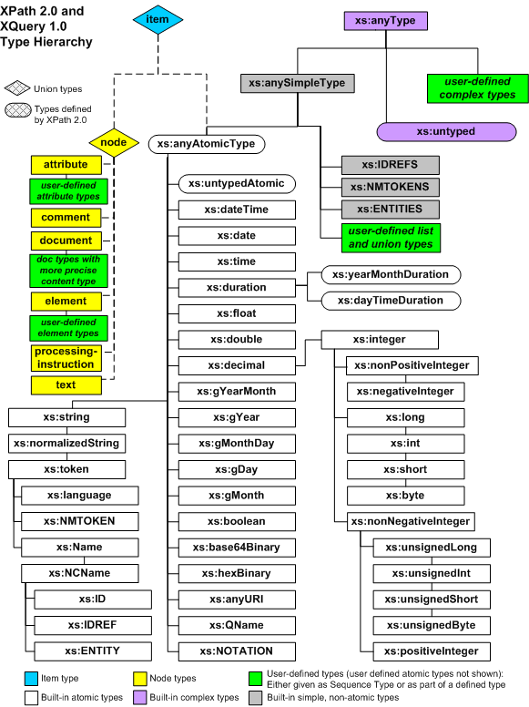

Úvod do XPath 2.0
by Jiří Znamenáček
Úvod
Zjednodušeně se dá říct, že zatímco XPath 1.0 slouží především k navigaci po stromové reprezentaci XML-dokumentu, přičemž občas dokáže s vrácenými uzly/hodnotami i něco udělat, XPath 2.0 je prakticky téměř programovací jazyk primárně zaměřený na zpracování sekvencí prvků různých typů, z nichž výše uvedené množiny uzlů jsou pouze jeden z možných.
Jinak je XPath 2.0 určen pro použití „uvnitř“ většího prostředí, které využívá jeho schopností. Kupříkladu z hlediska návrhu je XPath 2.0 prakticky podmnožinou standardu XQuery 1.0, tedy „databázového“ dotazovacího jazyka nad množinami XML-dokumentů. Nejčastější použití však má pravděpodobně jako součást transformačního jazyka XSLT2.
Hlavní rozdíly
Jednou větou by se dalo říci, že zatímco XPath 1.0 umí dobře navigovat po stromečku XML a s nalezenými uzly pak občas i něco spočítat, tak XPath 2.0 umí sice ještě pořád stejně dobře (a i líp) navigovat po stromečku, ale hlavně a především umí se vším tím (a nejen tím) počítat a provádět všemožné další operace. Konkrétně pak XPath 2.0:
-
Zahrnuje správu typů ve smyslu standardu XML Schema.
📝Ale naštěstí je volitelná. (Nevím o žádném nekomerčním programu, který obsahuje podporu XMLSchema.)
-
Na všechny zpracovávané hodnoty se dívá jako na sekvence různých typů (byť mají třeba zrovna pouze jeden prvek nebo dokonce žádný).
📝Zatímco XPath 1.0 tedy zpracovával především uzly XML-stromu, XPath 2.0 je navržen pro použití nad sekvencemi téměř libovolných dat. Přitom sekvence jsou v podstatě pythoní n-tice, tudíž jsou to uspořádané skupiny prvků nejrůznějších typů, a to včetně duplikátů.
- Mezi nové nejdůležitější funkce patří obsluha externích dokumentů (XPath 2.0 se tedy neomezuje pouze na jeden vstupní dokument), správa sekvencí a především podpora regulárních výrazů.
-
Zástupce za aktuální kontext (kterým může být cokoliv)
.a za rodiče..je možno doplnit predikáty.
Množiny uzlů jako sekvence
Výrazy XPath 1.0 vrací „množiny“ uzlů, které vyhovují dané cestě a podmínkám. Technicky vzato tato návratová množina není uspořádaná, ale prakticky jsou uzly snad skoro vždy vráceny v pořadí podle výskytu ve zdrojovém dokumentu. Navíc – nepřekvapivě – se každý jednotlivý uzel může v této množině vyskytnout pouze jednou.
Výrazy XPath 2.0 toho umí DALEKO více, ale základní funkcionalita je (nejen) z důvodů zpětné kopatibility ponechána stejná: „Klasický“ xpathový dotaz (byť doplněný o další možnosti novějšího standardu) na výběr vyhovujících uzlů vrátí po novu sice sekvenci, ale stále bez duplikátů a ve stejném pořadí. Teprve na speciální vyžádání můžete vybudovat sekvence, které již nebudou na pořadí uzlů zdrojového dokumentu hledět a které budou duplikáty obsahovat.
Příklad sekvence, která obsahuje tři stejné množiny elementů para:
(//para, //para, //para)
Výběr cesty I
Princip výběru cesty je úplně stejný jako u XPath 1.0, pouze byl doplněn o několik novinek. Tudíž po výběru kontextu (často záležitost aplikace, která XPath hostuje) nás čeká:
-
určit směr navigace (aneb osu, axis) po stromu od vybraného místa;
📝Na osách se nic nezměnilo. (Nepočítáme-li přípravu budoucí likvidace osy namespace.)
-
identifikovat povolenou cestu (aneb node test);
📝Přibylo několik obecných identifikátorů (
item(),element(),attribute(),document-node()).📝Operátor*je nyní možné použít i pro identifikaci jmenného prostoru (//*:para).📝Navíc je nyní možné identifikovat vyhovující uzly pomocí jejich typů (element(…, xs:…),attribute(…)). -
profiltrovat získaný výsledek na základě dodatečných podmínek (aneb predicates).
📝Které je nyní možné použít i u aktuálního kontextu
.(kterým už nemusí být jen a pouze uzel, ale třeba sekvence) a rodiče...📝A nepřekvapivě se nyní dá testovat i na typy.
Navíc přibylo několik vyloženě programátorských konstrukcí (jako for-in, if-then-else), byť XPath je stále jen jazyk pro psaní výrazů. Použití nachází především při vytváření sekvencí.
Výběr cesty II
K typům bude více komentářů později, ale nové identifikační funkce si rozebereme hned teď:
-
document-node(),document-node([Schema]ElementTest)
Že kořenový element a XML-dokument, ve kterém leží, nejsou jedno a to samé, už jsme viděli. Vzhledem k cílovému použití (práce nad sekvencemi z mnoha dokumentů) proto poskytuje XPath 2.0 funkci, kterou se na tento dokument můžeme dovolat. -
element(),element(ElementName[, TypeName]),schema-element(ElementName)
Funkce zastupující libovolný (případně blíže určený) uzel typu element.📝Stejně jako dříve lze v rámci cesty použít též*. -
attribute(),attribute(AttributeName[, TypeName]),schema-attribute(AttributeName)
Funkce zastupující libovolný (případně blíže určený) uzel typu atribut.📝Stejně jako dříve lze v rámci cesty použít též@*. -
item()
Funkce zastupující libovolný uzel nebo základní typ. (S každým prvkem je svázána jak jeho hodnota, tak jeho typ.)
Teď ještě i ty původní, z nichž jedna také doznala drobných změn:
-
node()
Funkce zastupující uzel typu element. -
text()
Funkce zastupující textový uzel. -
processing-instruction(),processing-instruction(PITarget)
Funkce zastupující uzel typu procesní instrukce.📝Přitom PITarget kromě přímé identifikace (např. xml-stylesheet) může být z důvodů zpětné kompatibility i řetězec (např. "xml-stylesheet"). -
comment()
Funkce zastupující uzel typu komentář.
Sekvence I
Jak už bylo několikrát zdůrazněno, XPath 2.0 operuje se sekvencemi, což jsou téměř přesně pythoní n-tice v kontextu XML. Příklad trojce:
(42, "http://en.wikipedia.org/wiki/42_%28number%29", //para)
Snad jediným – zato důležitým! – rozdílem je to, že sekvence v XPath'u nemohou být zanořené, tzn. že:
(/kořen/img, (42, "Douglas Adams"), //para)
==
(/kořen/img, 42, "Douglas Adams", //para)
Sekvence II – predikáty
Sekvence se dají samozřejmě snadno použít na místě dřívějších množin uzlů, počítaje v to i použití predikátů a nově též sjednocení. Například pro XML-dokument..
..vrátí následující dotazy..
(//hlavička, //para)[2]
(//hlavička | //para)[2]
..totéž (a to „English title“), protože výsledkem obou operací (před výběrem druhého prvku) je stejná sekvence čtyř uzlů.
Sekvence III – numerické rozsahy
Konstrukce..
VÝRAZ-1 to VÝRAZ-2
..umožňuje zavést číselné rozsahy, pokud se oba výrazy (klidně samozřejmě tedy i xpath-dotazy!) vyhodnotí jako celé číslo. Jednoduchý příklad:
('ahoj', 3 to 7, //obrázek/@zdroj)
==
('ahoj', 3, 4, 5, 6, 7, //obrázek/@zdroj)
Sekvence IVa – „for-in“
Následující konstrukce (za pomoci další novinky XPath 2.0, totiž reference proměnné pomocí znaku $)..
for $PROMĚNNÁ in SEKVENCE return VÝRAZ
..provede nad každým prvkem SEKVENCE operaci VÝRAZ(PROMĚNNÁ) a vrátí příslušný výsledek. Kupříkladu:
-
sum( for $i in (1 to 7) return $i * 2 )..vrátí číslo 56. -
Následující fragmenty XSLT-programu..
<xsl:copy-of select="for $s in hlavička return concat($s/text(), '
')" /> <xsl:for-each select="for $s in hlavička return $s"> <xsl:value-of select="." /> <xsl:text>
</xsl:text> </xsl:for-each>..ve správném kontextu nad naším testovacím xmlčkem vypíší postupně (a odřádkovaně) textový obsah obou příslušných elementů <hlavička>.
Sekvence IVb – vícenásobné „for-in“
Také je možné iterovat najednou přes více sekvencí, přičemž smyčka se chová úplně stejně jako pythoní generátorový výraz – pro každý prvek první sekvence se vykoná iterace přes všechny prvky druhé sekvence. Proto..
sum( for $i in (1 to 3), $j in (1 to 3) return $i * $j )
..vrátí číslo 36.
Sekvence IVc – „for-in“ a uzlové parametry
Kromě toho je také možné poslat prvky sekvence do smyčky for-in úplně jiným způsobem – jako výsledek externího XPath-dotazu:
# XPath
hlavička/(for $s in . return concat($s/text(), '
'))
# XSLT
<xsl:copy-of select="hlavička/(for $s in . return concat($s/text(), '
'))" />
Výsledná sekvence xpathového dotazu hlavička/ je prvek po prvku „krmena“ do příslušného xpathového výrazu (kam nepřekvapivě probublá jako jeho aktuální kontext, tedy .).
PS: Funguje to pouze pro sekvence uzlů, nikoli pro sekvence atomických typů.
Sekvence V – kvantifikátory
Další novinkou je možnost použít kvantifikátorů some a every. Zatímco..
some $PROMĚNNÁ in SEKVENCE satisfies VÝRAZ
..vrátí true tehdy, bude-li alespoň jeden prvek ze SEKVENCE splňovat podmínku udanou VÝRAZem, tak..
every $PROMĚNNÁ in SEKVENCE satisfies VÝRAZ
..vrátí pochopitelně true jenom tehdy, budou-li uvedenou podmínku splňovat všechny prvky sekvence. Příklady (opět nad naším testovacím xmlčkem):
# vrátí „true“, protože oba elementy <hlavička> mají atribut „jazyk“
every $n in hlavička satisfies $n/@jazyk
# vrátí „false“, protože pouze druhý element <para> obsahuje podelement
every $n in para satisfies $n/*
Podobně jako u konstrukce for-in je opět možné ověřovat podmínky pro více než jednu vstupní sekvenci. Následující příklad tak vrací true:
some $x in (1, 2, 3), $y in (3, 2, 1) satisfies $x + $y = 4
every by tak vrátil false.
Množinové operace pro sekvence uzlů
Obsahují-li zpracovávané sekvence pouze množiny uzlů (žádné jiné typy!), je možné pro ně použít následující tři množinové operace:
-
union(též|) – sjednocení📝V podobě operátoru|bylo už v Xpath 1.0. -
intersect– průnik📝Pro jednu množinu uzlů se dáNODESET[PODMÍNKA-1] intersect NODESET[PODMÍNKA-2]postaru přepsat jakoNODESET[PODMÍNKA-1 and PODMÍNKA-2]. -
except– rozdíl📝Pro stejnou jednu množinu uzlů se dá zaseNODESET/* except NODESET/JMÉNOpostaru přepsat jakoNODESET/*[name()!='JMÉNO'].
Všechny tři operace odstraní z návratové sekvence případné duplikáty a seřadí uzly podle pořadí jejich výskytu ve zdrojovém XML-dokumentu – i nové operace s uzly se tedy chovají tak, jak jsme zvyklí z XPath 1.0. Několik příkladů (na našem testovacím xmlčku):
count(//hlavička union //para) # 4
count(//element() except //para) # 3
count(//* except (//para|//obrázek)) # 2
Další operace na uzlech (nodech)
V XPath 2.0 je také mnohem jednodušší otestovat, zda jsou dva uzly (nodes) shodné – stačí použít pro to nově zavedený operátor shodnosti is:
hlavička[2] is hlavička[@jazyk='eng'] # true
Podobně máme nyní k dispozici operátory pro zjišťování následnosti uzlů v rámci stromečku:
-
UZEL-1 << UZEL-2– Nachází se UZEL-1 před UZLEM-2?
hlavička[@jazyk='cze'] << hlavička[@jazyk='eng'] # true -
UZEL-1 >> UZEL-2– Nachází se UZEL-1 za UZLEM-2?
hlavička[@jazyk='cze'] >> hlavička[@jazyk='eng'] # false
Příklad ekvivalentních zápisů
Protože XPath 2.0 má k dispozici mnohem více výrazových prostředků než XPath 1.0, umožňuje spoustu úkolů řešit více než jedním způsobem. V následujícím příkladu vrací všechny dotazy nad planets.xml stejnou návratovou množinu (resp. tedy sekvenci) uzlů:
/planets/planet/(mass|radius)
/planets/planet/(mass union radius)
/planets/planet/mass | /planets/planet/radius
/planets/planet/*[(self::mass) or (self::radius)]
Porovnávání
Narozdíl od XPath 1.0, máme v XPath 2.0 pro zmatení nepřítele k dispozici dvě různá porovnávání – mezi jednotlivými (skalárními) hodnotami (ty se chovají „standardně“) a mezi libovolnými sekvencemi (ty se chovají úplně jinak; v podstatě tak, jak se chová srovnávání množin uzlů u XPath 1.0).
Porovnávání hodnot
Operátory pro porovnávání jednotlivých hodnot (tzv. skalárních) jsou následující:
eq ne lt le gt ge
Příklad – všechny tři následující příklady vrací true:
hlavička[@jazyk='eng'] eq 'English title'
3 ne 5
'abc' le 'abcd'
Porovnávání sekvencí
Operátory pro obecné porovnávání..
= != < <= > >=
..se sice na první pohled tváří úplně stejně jako staří známí z XPath 1.0, ale jelikož nyní slouží k porovnávání dvou zcela libovolných sekvencí, je všechno podstatně složitější. V podstatě pro porovnávání sekvencí platí podobná pravidla, jako pro porovnávání uzlů v XPath 1.0, zjednodušeně by se tedy dalo říci, že:
Obě porovnávané sekvence jsou nejdříve „zjednodušeny“ na sekvence atomických hodnot. Ty jsou následně zkonvertovány na odpovídající typy (podle předepsaných pravidel) a poté stylem „každý prvek z první sekvence s každým prvkem z druhé sekvence“ porovnány odpovídajícími operátory pro srovnání hodnot. Jestliže alespoň jedno ze srovnání je pravdivé, vrátí celé srovnání true, jinak vrací false.
Několik příkladů:
# Pro jednoduché hodnoty se nic nemění:
hlavička[@jazyk='eng'] = 'English title' # true
# Tohle nepřekvapivě vrátí „true“, protože stačí
# najít jedinou neshodnou dvojici – a tou je hned ta první „(2,1)“:
(2,3,4) != (1,3,'a')
# Tohle ovšem naprosto překvapivě také vrátí „true“, protože
# i opačně stačí najít jedinou shodnou dvojici – a tou je „(3,3)“:
(2,3,4) = (1,3,'a')
Podmíněný výraz
XPath 2.0 obsahuje dokonce i podmínku. Její syntaxe je následující..
if (PODMÍNKA) then VÝRAZ-1 else VÝRAZ-2
..a vyhodnocení naprosto standardní – je-li splněna PODMÍNKA, je vyhodnocen a vrácen VÝRAZ-1, jinak je vyhodnocen a vrácen VÝRAZ-2. Příklad:
if (./@jazyk='cze') then ./text() else '[chybí český překlad]'
Dvě poznámky:
- VÝRAZy výše mohou být opět podmínky.
- Každá podmínka musí mít vždy i else větev.
Pravdivostní operátory a funkce
Na pravdivostních operátorech a funkcích se oproti XPath 1.0 nic nezměnilo:
-
logický součin:
and -
logický součet:
or -
logická negace:
not()
Komentáře
Vzhledem k zahrnutí takových programátorských prvků jako je smyčka for-in nebo rozhodovací příkaz if-then-else už asi nikoho ani nepřekvapí, že XPath 2.0 obsahuje dokonce i komentáře ^_~ Zapisují se zcela nečekaně následujícím způsobem:
(: toto je komentář :)
Upravený příklad z předchozího slajdu tak může vypadat třeba takto:
(: a) aktuální element má v atributu 'jazyk' hodnotu 'cze' :)
if (./@jazyk='cze') then
./text()
(: b) jinou hodnotu :)
else
'[chybí český překlad]'
Aritmetické operátory
Standardní sada aritmetických operátorů byla rozšířena o celočíselné dělení idiv. Ukažme si je radši rovnou všechny na příkladech:
2 + 3 # 5
2 - 3 # -1
2 * 3 # 6
5 div 2 # 2.5
-5 div 2 # -2.5
5 mod 2 # 1
-5 mod 2 # -1
5 idiv 2 # 2
-5 idiv 2 # -2
Mimochodem platí následující ekvivalence:
(m idiv n) eq floor(m div n) # pro m,n >0
(m idiv n) eq ceiling(m div n) # pro právě jedno z m,n <0
Typy v „XPath 2.0“
V XPath 1.0 také bylo vlastně k dispozici několik typů, konkrétně:
- množiny uzlů (nodesets);
- pravdivostní hodnoty (
true(),false()); - čísla;
- řetězce.
V XPath 2.0 je tato skupina velmi rozšířena o:
- všechny jednoduché a komplexní typy z XML Schema;
- všechny z nich odvozené typy.
PS: Hodně zajímavou vlastností XPath'u 2.0 je, že přístupové funkce umožňují vybírat množiny uzlů i jen podle jejich typu.
Jmenný prostor typů
Základní typy spadají pod jmenný prostor XML-Schemat svázaný tradičně s identifikátorem xs (řidčeji xsd):
xmlns:xs="http://www.w3.org/2001/XMLSchema"
Hierarchie typů
Při práci s XML se navíc míchají dohromady dva různé druhy typů – typy schematové a typy sekvenční (xpathové), které si zcela neodpovídají. Navíc pro zmatení nepřítele oba druhy obsahují základní (atomické) typy.
-
Schematové typy jsou definovány v příslušném schematu pro dané XML (typicky externí dokument, např. XMLSchema, RelaxNG apod.) a používají se jako typové anotace uzlů (elementů a atributů) v tomto XML. Dělí se na typy:
- komplexní, složené (complex) – definují vyhovující skupiny uzlů (elementů s příslušnými atributy);
-
jednoduché (simple), tedy vlastní koncové hodnoty uzlů, které se dále dělí na:
- vlastní základní, atomické (atomic) – to jsou všechny základní předdefinované typy (jako například string, double, duration, anyURI, token, NMTOKEN, integer, ENTITY a hromada dalších);
-
a z nich vyrobené složitější typy odvozené buď restrikcí (takže ty jsou vlastně přímými podtypy atomických; v XMLSchema viz
xs:restriction), nebo pak hlavně sjednocením (v XMLSchema vizxs:union) a seznamem (v XMLSchema vizxs:list).
-
XPathové typy jsou typy xpathových sekvencí, tedy vlastně prakticky všech výrazů v XPath'u. Jsou charakterizovány:
- typem prvku (item type) – tím může být buď typ uzlu (jako je např. element či text a další), nebo základní (atomický) typ (prakticky podmnožina atomických typů z XMLSchema);
-
kardinalitou (cardinality) tedy možným počtem výskytů – daný prvek se může vyskytnout vůbec či právě jednou (
?), právě jednou (výchozí hodnota), jednou či vícekrát (+), libovolněkrát (*).
Příklad: Atribut nadefinovaný ve schematech jako typu xs:NMTOKENS (tedy sekvence atomických hodnot typu xs:NMTOKEN), bude mít v rámci XPath'u sekvenční typ xs:NMTOKEN*.
Přehled typů

XQuery 1.0 and XPath 2.0 Data Model (XDM) (Second Edition)
Copyright © 2010-12-14 World Wide Web Consortium, (Massachusetts Institute of Technology, European Research Consortium for Informatics and Mathematics, Keio University, Beihang). All Rights Reserved. http://www.w3.org/Consortium/Legal/2002/copyright-documents-20021231
Poznámka
Jednotlivá prostředí, která hostují XPath, mohou nadefinovat, které z typů je potřeba rozpoznat i bez deklarované podpory pro kompletní XML Schema. V případě XSLT 2.0 jde o typy..
-
xs:string -
xs:boolean -
xs:integer,xs:decimal,xs:double,xs:float,xs:base64Binary,xs:hexBinary -
xs:date,xs:time,xs:dateTime,xs:duration,xs:yearMonthDuration,xs:dayTimeDuration,xs:gDay,xs:gMonthDay,xs:gMonth,xs:gYearMonth,xs:gYear -
xs:QName,xs:anyURI -
xs:anyType,xs:anySimpleType,xs:anyAtomicType,xs:untyped,xs:untypedAtomic
..a dále všechny typy z rozšíření, která daný nástroj podporuje.
V praxi tak tedy často můžeme použít prakticky všechny základní atomické typy, a to včetně jejich kvantifikátorových variant (?, +, *):
xs:string?
xs:integer+
xs:date*
(xs:string, xs:string?, xs:integer)).
Statické a dynamické typy
XPath 2.0 umožňuje přiřadit výrazům statický typ, který může být ověřen nezávisle na výpočtu na základě typů jednotlivých složek výrazu (což je také jeden z důvodů, proč se statické typování používá). Při konkrétním výpočtu daného výrazu je uplatněn typ dynamický, který může být specifičtější než příslušný statický. Příklad:
Je-li statický typ výrazu třebasxs:integer*, tedy sekvence předem neznámého počtu celých čísel, jeho konrétní dynamická realizace při výpočtu může být napříkladxs:integer, tedy jedno celé číslo.
Každý výraz v rámci XPath'u má tedy kromě konkrétní hodnoty i jistý typ, se kterým můžeme pracovat podobně jako se samotnou hodnotou (dotazovat se na něj, měnit ho apod.).
Práce s typy
Jelikož v XPath 2.0 mají typy prominentní postavení, nepřekvapivě je k dispozici armáda nástrojů pro práci s nimi. Mimo jiné můžeme pomocí operátoru:
-
instance ofověřit, zda je nějaká hodnota konkrétního typu; -
castable aszjistit, zda je nějaká hodnota konvertovatelná na jiný typ; -
cast aspřevést daný výraz na jiný typ, a to včetně změny jeho dynamického typu; -
treat aszaručit požadovaný dynamický typ, aniž bychom ale změnili typ celého výrazu.
Několik příkladů (i nad naším planetárním XMLčkem):
# Následujících pět výrazů je pravdivých:
5 instance of xs:integer
5 instance of xs:decimal
(5, 6, 7) instance of xs:integer+
//planets instance of element()
(//planets/@units-empty, //planets/@units-AU-m) instance of attribute()+
# Vrátí „decimal“:
if (//planet[name='Earth']/year castable as xs:decimal) then
'decimal'
else
'string'
# Vrátí „string“:
if (//planet[name='Earth']/mass castable as xs:decimal) then
'decimal'
else
'string'
# Výchozí a vnucená konverze nejsou vždy úplně to samé:
# a) vrátí „0.25636300399997936“
//planet[name='Earth']/year - 365
# b) vrátí „0.256363004“
# (za předpokladu reference „$year = //planet[name='Earth']/year“)
if ($year castable as xs:decimal) then
$year cast as xs:decimal - 365
else
concat($year, ' - 365')
treat as se vlastně používá pro zmatení statického ověřování typů (static type checker; tedy před výpočtem): Ačkoli podle struktury kódu se něco tváří jako jiného typu, než požaduje daný výraz, aplikací treat as můžeme kód donutit projít statickou (tedy předběhovou) typovou validací. Nebude-li daná hodnota během výpočtu (tedy s aktuálním dynamickým typem) odpovídat typu, který jsme vnutili validátoru, dojde k vyvolání (dynamické) výjimky.
Funkce
S přechodem XPath'u od množin uzlů k sekvencím a především pak s důsledným zavedením (statických) typů souvisí také enormní nárůst počtu funkcí, které jsou k dispozici:
XPath 1.0 – 27 funkcí
XPath 2.0 – 111 funkcí (a to jsem vynechal identifikační funkce a podobné)
Z nejdůležitějších (a také asi nejzajímavějších) se extrémně se rozšířil počet funkcí pro obsluhu řetězců (mimo jiné máme teď k dispozici regexpové funkce!), zcela nově se objevila obrovská armáda funkcí pro práci se sekvencemi a skoro stejně funkcí pro obsluhu data a času. Na vybrané z nich se za chvíli podíváme.
Jmenný prostor funkcí
XPathové funkce jsou tradičně svázány s identifikátorem fn v následujícím jmenném prostoru:
xmlns:fn="http://www.w3.org/2005/xpath-functions"
Funkce v „XPath 1.0“
| pole působnosti | funkce |
|---|---|
| množiny uzlů |
number last()number position()number count(node-set)node-set id(object)string local-name(node-set?)string namespace-uri(node-set?)string name(node-set?)
|
| řetězce |
string string(object?)string concat(string, string, string*)boolean starts-with(string, string)boolean contains(string, string)string substring-before(string, string)string substring-after(string, string)string substring(string, number, number?)number string-length(string?)string normalize-space(string?)string translate(string, string, string)
|
| pravdivostní hodnoty |
boolean boolean(object)boolean not(boolean)boolean true()boolean false()boolean lang(string)
|
| čísla |
number number(object?)number sum(node-set)number floor(number)number ceiling(number)number round(number)
|
Funkce v „XPath 2.0“
| pole působnosti | funkce |
|---|---|
|
přístupové funkce
(viz standard) |
node-name($arg as node()?) as xs:QName?nilled($arg as node()?) as xs:boolean?string([$arg as item()?]) as xs:stringdata($arg as item()*) as xs:anyAtomicType*base-uri([$arg as node()?]) as xs:anyURI?document-uri($arg as node()?) as xs:anyURI? |
| vyvolání chyby |
error([$error as xs:QName?[, $description as xs:string[, $error-object as item()*]]]) as none |
|
obsluha trasování
(„odbroukovávání“) |
trace($value as item()*, $label as xs:string) as item()* |
| datum a čas |
dateTime($arg1 as xs:date?, $arg2 as xs:time?) as xs:dateTime?years-from-duration($arg as xs:duration?) as xs:integer?months-from-duration($arg as xs:duration?) as xs:integer?days-from-duration($arg as xs:duration?) as xs:integer?hours-from-duration($arg as xs:duration?) as xs:integer?minutes-from-duration($arg as xs:duration?) as xs:integer?seconds-from-duration($arg as xs:duration?) as xs:decimal?year-from-dateTime($arg as xs:dateTime?) as xs:integer?month-from-dateTime($arg as xs:dateTime?) as xs:integer?day-from-dateTime($arg as xs:dateTime?) as xs:integer?hours-from-dateTime($arg as xs:dateTime?) as xs:integer?minutes-from-dateTime($arg as xs:dateTime?) as xs:integer?seconds-from-dateTime($arg as xs:dateTime?) as xs:decimal?timezone-from-dateTime($arg as xs:dateTime?) as xs:dayTimeDuration?year-from-date($arg as xs:date?) as xs:integer?month-from-date($arg as xs:date?) as xs:integer?day-from-date($arg as xs:date?) as xs:integer?timezone-from-date($arg as xs:date?) as xs:dayTimeDuration?hours-from-time($arg as xs:time?) as xs:integer?minutes-from-time($arg as xs:time?) as xs:integer?seconds-from-time($arg as xs:time?) as xs:decimal?timezone-from-time($arg as xs:time?) as xs:dayTimeDuration?adjust-dateTime-to-timezone($arg as xs:dateTime?[, $timezone as xs:dayTimeDuration?]) as xs:dateTime?adjust-date-to-timezone($arg as xs:date?[, $timezone as xs:dayTimeDuration?]) as xs:date?adjust-time-to-timezone($arg as xs:time?[, $timezone as xs:dayTimeDuration?]) as xs:time? |
| čísla |
abs($arg as numeric?) as numeric?ceiling($arg as numeric?) as numeric?floor($arg as numeric?) as numeric?round($arg as numeric?) as numeric?round-half-to-even($arg as numeric?[, $precision as xs:integer]) as numeric? |
|
řetězce
(včetně regexpů) |
codepoints-to-string($arg as xs:integer*) as xs:stringstring-to-codepoints($arg as xs:string?) as xs:integer*compare($comparand1 as xs:string?, $comparand2 as xs:string?[, $collation as xs:string]) as xs:integer?codepoint-equal($comparand1 as xs:string?, $comparand2 as xs:string?) as xs:boolean?concat($arg1 as xs:anyAtomicType?, $arg2 as xs:anyAtomicType?, ...) as xs:stringstring-join($arg1 as xs:string*, $arg2 as xs:string) as xs:stringsubstring($sourceString as xs:string?, $startingLoc as xs:double[, $length as xs:double]) as xs:stringstring-length([$arg as xs:string?]) as xs:integernormalize-space([$arg as xs:string?]) as xs:stringnormalize-unicode($arg as xs:string?[, $normalizationForm as xs:string]) as xs:stringupper-case($arg as xs:string?) as xs:stringlower-case($arg as xs:string?) as xs:stringtranslate($arg as xs:string?, $mapString as xs:string, $transString as xs:string) as xs:stringencode-for-uri($uri-part as xs:string?) as xs:stringiri-to-uri($iri as xs:string?) as xs:stringescape-html-uri($uri as xs:string?) as xs:stringcontains($arg1 as xs:string?, $arg2 as xs:string?[, $collation as xs:string]) as xs:booleanstarts-with($arg1 as xs:string?, $arg2 as xs:string?[, $collation as xs:string]) as xs:booleanends-with($arg1 as xs:string?, $arg2 as xs:string?[, $collation as xs:string]) as xs:booleansubstring-before($arg1 as xs:string?, $arg2 as xs:string?[, $collation as xs:string]) as xs:stringsubstring-after($arg1 as xs:string?, $arg2 as xs:string?[, $collation as xs:string]) as xs:stringmatches($input as xs:string?, $pattern as xs:string[, $flags as xs:string]) as xs:booleanreplace($input as xs:string?, $pattern as xs:string, $replacement as xs:string[, $flags as xs:string]) as xs:stringtokenize($input as xs:string?, $pattern as xs:string[, $flags as xs:string]) as xs:string* |
| obsluha typu anyURI |
resolve-uri($relative as xs:string?[, $base as xs:string]) as xs:anyURI? |
| pravdivostní hodnoty |
true() as xs:booleanfalse() as xs:booleannot($arg as item()*) as xs:boolean |
| obsluha typu QNames |
resolve-QName($qname as xs:string?, $element as element()) as xs:QName?QName($paramURI as xs:string?, $paramQName as xs:string) as xs:QNameprefix-from-QName($arg as xs:QName?) as xs:NCName?local-name-from-QName($arg as xs:QName?) as xs:NCName?namespace-uri-from-QName($arg as xs:QName?) as xs:anyURI?namespace-uri-for-prefix($prefix as xs:string?, $element as element()) as xs:anyURI?in-scope-prefixes($element as element()) as xs:string* |
| uzly |
name([$arg as node()?]) as xs:stringlocal-name([$arg as node()?]) as xs:stringnamespace-uri([$arg as node()?]) as xs:anyURInumber([$arg as xs:anyAtomicType?]) as xs:doublelang($testlang as xs:string?[, $node as node()]) as xs:booleanroot() as node()root($arg as node()?) as node()? |
| sekvence |
boolean($arg as item()*) as xs:booleanindex-of($seqParam as xs:anyAtomicType*, $srchParam as xs:anyAtomicType[, $collation as xs:string]) as xs:integer*empty($arg as item()*) as xs:booleanexists($arg as item()*) as xs:booleandistinct-values($arg as xs:anyAtomicType*[, $collation as xs:string]) as xs:anyAtomicType*insert-before($target as item()*, $position as xs:integer, $inserts as item()*) as item()*remove($target as item()*, $position as xs:integer) as item()*reverse($arg as item()*) as item()*subsequence($sourceSeq as item()*, $startingLoc as xs:double[, $length as xs:double]) as item()*unordered($sourceSeq as item()*) as item()*zero-or-one($arg as item()*) as item()?one-or-more($arg as item()*) as item()+exactly-one($arg as item()*) as item()deep-equal($parameter1 as item()*, $parameter2 as item()*[, $collation as string]) as xs:booleancount($arg as item()*) as xs:integeravg($arg as xs:anyAtomicType*) as xs:anyAtomicType?max($arg as xs:anyAtomicType*[, $collation as string]) as xs:anyAtomicType?min($arg as xs:anyAtomicType*[, $collation as string]) as xs:anyAtomicType?sum($arg as xs:anyAtomicType*) as xs:anyAtomicTypesum($arg as xs:anyAtomicType*, $zero as xs:anyAtomicType?) as xs:anyAtomicType?id($arg as xs:string*[, $node as node()]) as element()*idref($arg as xs:string*[, $node as node()]) as node()*doc($uri as xs:string?) as document-node()?doc-available($uri as xs:string?) as xs:booleancollection([$arg as xs:string?]) as node()*element-with-id($arg as xs:string*[, $node as node()]) as element()* |
| kontext |
position() as xs:integerlast() as xs:integercurrent-dateTime() as xs:dateTimecurrent-date() as xs:datecurrent-time() as xs:timeimplicit-timezone() as xs:dayTimeDurationdefault-collation() as xs:stringstatic-base-uri() as xs:anyURI? |
Funkce – řetězce
Skoro všechny zajímavější funkce pro operace nad řetězci byly již v XPath 1.0 (za zmínku stojí především přidání funkce ends-with()), proto se zde s příklady probereme jen tři následující:
concat(STR1, STR2, …) převede (cast) všechny uvedené parametry STRn na typ xs:string a následně je „slepí“ do jednoho výstupního řetězce, přičemž případné prázdné sekvence na vstupu vyhodnotí jako prázdné řetězce:
fn:concat('Ahoj', ', ', 'světe', '!') # „Ahoj, světe!“
fn:concat('Ahoj', (), ', ', (), 'světe', '!') # „Ahoj, světe!“
Funkce string-join(SEKVENCE, ŘETĚZEC) se chová velmi podobně jako pythoní řetězcová metoda join() – jednotlivé prvky SEKVENCE převede (cast) na typ xs:string a pomocí řetězce ŘETĚZEC je „slepí“ dohromady:
fn:string-join(('be', 'fe', 'le', 'me'), '') # „befeleme“
fn:string-join(('be', 'fe', 'le', 'me'), '-') # „be-fe-le-me“
Funkce translate(ŘETĚZEC, CO, ČÍM) nahradí v řetězci ŘETĚZEC znaky vyskytující se v řetězci CO za znaky na stejných místech řetězce ČÍM:
fn:translate('bar','abc','ABC') # „BAr“
fn:translate('bar','abc','') # „r“
Funkce – regexpy
PS: Všechny následující regexpové funkce mají ještě jeden nepovinný parametr – příznaky regexpového výrazu.
matches(ŘETĚZEC, VZOR) vrací true, pokud je regexpový VZOR obsažen v testovaném řetězci ŘETĚZEC:
fn:matches("abracadabra", "bra") # true
fn:matches("abracadabra", "^a.*a$") # true
fn:matches("abracadabra", "^bra") # false
replace(ŘETĚZEC, CO, ZA) vymění všechny nepřekrývající se výskyty regexpového vzoru CO obsažené v testovaném řetězci ŘETĚZEC za odpovídající výsledek výrazu ZA:
fn:replace('abracadabra', 'bra', '*') # a*cada*
fn:replace('abracadabra', 'a', '') # brcdbr
fn:replace('abracadabra', 'a(.)', 'a$1$1') # abbraccaddabbra
fn:replace('aaaa', 'a+', 'b') # b
tokenize(ŘETĚZEC, VZOR) vrací sekvenci vyrobenou ze vstupního ŘETĚZCE jeho rozsekáním podle regexpového VZORu (separátory přitom nejsou vráceny):
fn:tokenize('1, 15, 24, 50', ',') # ('1', ' 15', ' 24', ' 50')
fn:tokenize('1, 15, 24, 50', ',\s*') # ('1', '15', '24', '50')
fn:tokenize('1,15,,24,50,', ',') # ('1', '15', '', '24', '50', '')
Funkce – sekvence
PS: Většina sekvenčních funkcí má ještě jeden nepovinný parametr – funkci pro porovnávání řetězců (collation). A nezapomeňte, že v XPath'u se počítá od jedné.
Funkce index-of(SEKVENCE, PRVEK) vrátí sekvenci čísel pozic výskytů PRVKU v zadané SEKVENCI:
# prázdná sekvence („fn:boolean“ ji vyhodnotí jako „false“)
fn:index-of(('a', 30, 20, 'bra', 'kada', 10, 30, 'bra', 20), 40)
# 4 8
fn:index-of(('a', 30, 20, 'bra', 'kada', 10, 30, 'bra', 20), 'bra')
Funkce insert-before(SEKVENCE, POZICE, PRVEK) vloží PRVEK do SEKVENCE na takové místo, aby jeho umístění odpovídalo zadané POZICI:
fn:insert-before((1, 2, 3), 2, 'baf') # (1, 'baf', 2, 3)
Funkce remove(SEKVENCE, POZICE) odstraní ze zadané SEKVENCE prvek na pozizi POZICE:
fn:remove((1, 2, 3), 2) # (1, 3)
Funkce subsequence(SEKVENCE, START, DÉLKA) vybere ze zadané SEKVENCE podsekvenci, která začíná na pozici START a její počet prvků se rovná DÉLCE:
# ('b', 2, 'abc', 3)
fn:subsequence((1, 'a', 'b', 2, 'abc', 3, 'xyz'), 3, 4)
Jak je porovnávání v XPath'u trošku nezvyklé, tak pro porovnání dvou sekvencí existuje funkce, která se chová zcela očekávaně – deep-equal(SEKVENCE1, SEKVENCE2) porovná obě zadané sekvence prvek po prvku a pěkně do hloubky, tj. atomické hodnoty na stejných místech se musí rovnat a neatomické musí být uzly stejného jména a typu, jejichž potomci jsou opět sobě rovni podle stejného algoritmu:
fn:deep-equal((1, 2, 3), (1, 2, 3)) # true
fn:deep-equal(//planet, //planet) # true
fn:deep-equal(//planet[3], //planet[name='Earth']) # true
fn:deep-equal(//planet[4], //planet[name='Earth']) # false
Funkce – externí dokumenty
PS: Byť jsou zde všechny příklady pro lokální URI, fungují i pro nelokální.
V XPath 2.0 lze (konečně) pomocí funkce doc(URI) načíst externí XML-dokument z adresy URI:
# vrátí „planets“ (jméno kořenového elementu v načítaném souboru)
fn:name( fn:doc('planets.xml')/* )
Před pokusem o jeho načtení je asi dobré zkontrolovat, zda na příslušném místě URI je uvedený dokument k dispozici pomocí funkce doc-available(URI):
fn:doc-available('soubor.xml')
Dokonce je možné pomocí funkce collection(URI) načíst celou skupinu externích dokumentů popsaných externím zdrojem na adrese URI. Podrobné chování této funkce je však mnohem složitější a navíc závisí na implementaci.
V případě Saxon'u je v nejjednodušším případě očekáván a zpracován XML-soubor se strukturou katalogu..
<collection>
<doc href="soubor1.xml" />
<doc href="soubor2.xml" />
<doc href="soubor3.xml" />
</collection>
..díky čemuž se pak vrátí kolekce tří XML-dokumentů:
# vrátí „3“ (počet dokumentů v katalogu)
fn:count( fn:collection('collection.xml') )
# vrátí „document-node“ prvního z načtených souborů, tj. souboru „soubor1.xml“
fn:collection('collection.xml')[1]
Stejně tak je ale možné zprocesovat například obsah nějakého adresáře pomocí dotazu typu file:///a/b/c/d?keyword=value;keyword=value;… (například ./?select=*.(xml|xhtml) vrátí kolekci všech xml- a xhtml-souborů v aktuálním adresáři).
Další potenciálně velmi užitečnou funkcí je document-uri(DOCUMENT-NODE), která dokáže předhozenému DOCUMENT-NODE'u přiřadit odpovídající URI:
# vrátí URI aktuálně zpracovávaného dokumentu
fn:document-uri( fn:root() )
Ještě pár funkcí
Výběr několika dalších zajímavých funkcí:
Funkce root([NODE]) vrací xml-dokument stromečku buď aktuálního kontextu (žádný argument) nebo kontextu, do kterého patří argument NODE:
fn:name( fn:root()/* ) # jméno kořenového elementu aktuálního kontextu
Funkce name([NODE]) vrací jméno uzlu aktuálního kontextu (v případě žádného argumentu) nebo jméno uzlu odkazovaného cestou NODE:
fn:name(/*) # „planets“
fn:name(//planet[3]) # „planet“
V případě jmenných prostorů dostaneme nazpět i příslušný identifikátor:
fn:name( fn:doc('test.xsl')/* ) # „xsl:stylesheet“
http://www.w3.org/1999/XSL/Transform).
Na aktuálním kontextu operuje funkce position(), která vrací aktuální pozici při jeho zpracovávání:
//planet/fn:position() # 1 2 3 4 5 6 7 8
Podobně ne úplně šťastně pojmenovaná funkce last() vrací velikost množiny uzlů aktuálního kontextu:
//planet/fn:last() # 8 8 8 8 8 8 8 8
Uzlové parametry funkcí
Jak jsme právě viděli, kromě přímého vstupu v podobě argumentu (který ale není vždy aplikovatelný; viz právě funkce position() a last() z předchozího slajdu) lze také dosazovat hodnoty do funkcí úplně stejně jako u smyčky for-in – jednu za druhou jako prvky sekvence, která je výsledkem xpathového dotazu:
# Vrátí: Me Ve Ea Ma Ju Sa Ur Ne
/planets/planet/name/substring(.,1,2)
('Me', 'Ve', 'Ea', 'Ma', 'Ju', 'Sa', 'Ur', 'Ne'), konkrétní výstup záleží na použitém programu.
for-in to zabírá pouze pro sekvence uzlů.
Zdroje
Kromě standardů XML Path Language (XPath) 2.0 (Second Edition) a XQuery 1.0 and XPath 2.0 Functions and Operators (Second Edition) jsem čerpal především z následujících zdrojů:
Ukázkové příklady jsem testoval pomocí Saxon'u.